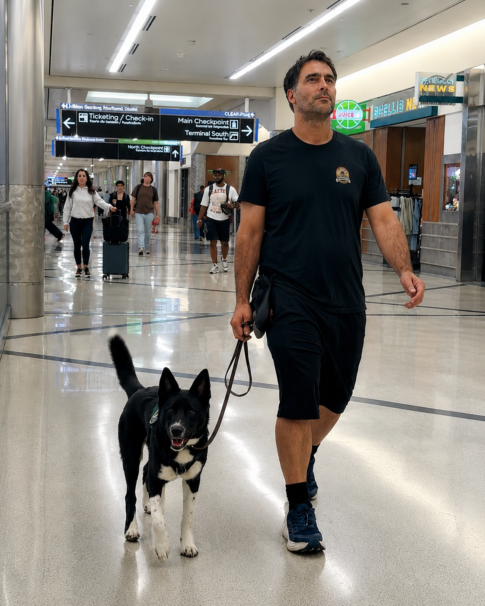

From screaming, lunging, and thrashing to real-world public access work.
Live virtual training for dogs who pull, bark, lunge, ignore you, or make walks feel impossible.
Stop dreading
the walk.
Learn the core game I use to build better leash walking, stronger recall, and a dog who can stay where you put them — even when the real world gets loud.
If clipping on the leash makes you brace for pulling, barking, lunging, embarrassment, or another “here we go again” walk, this is for you.
This is a live virtual sprint, so you can train with Joel from anywhere in the world.
Attend from anywhere · 15 seats max · Video feedback included · Digital Dog School included

One core game. Better walks.Livecoaching
1core game
15seats max
Next cohort
Opening soonTrain from anywhere with support on your actual dog, in your actual environment.
The same scary trigger looked different the next day.
The daily problem
You should not need a pep talk just to clip on the leash.
Your dog drags you down the street.
They lose their mind when another dog shows up.
They ignore “come.”
They pop out of place the second you stop paying attention.
And somehow, after the videos, tips, tools, treats, classes, and advice… the walk still sucks.
That is usually not because you are lazy or your dog is broken. It is because nobody gave you the right few skills in the right order — then helped you use them in real life.
The result
By the end of the sprint, you’ll know how to:
Stop pulling before it turns into a fight
Know what to do the moment your dog hits the end of the leash.
Get your dog’s attention outside
Build a dog who can notice the world without completely forgetting you exist.
Walk with me. Turn with me. Stop with me.
Teach the leash skills that make walks feel less chaotic and more connected.
Know exactly what to do when you see your dog’s trigger
DogPersonBikeCarSquirrelSurprise trigger
You’ll know what to do in that moment instead of panicking, freezing, or dragging your dog away.
Change how your dog feels about triggers
Not just suppress the explosion — help your dog start seeing triggers as less of a big deal.
Build a come and stay that work in real life
Teach your dog to come instead of blowing you off, and stay where you put them — including the doorway.

Why this exists
We are not doing every dog training thing. We are doing what moves the needle.
I know a lot of things that can help a lot of dogs.
Some are way outside the norm. Some are really cool. And the more your dog knows, the better.
But that is not what this sprint is for.
You have a dog. The walk is causing a problem. You want that problem fixed.
If it does not move the needle, we are not doing it.
Fix the Walk is focused on better walks, better attention, recall, staying put, and handling triggers — not six months of theory, fluff, or random homework.
What you get
What you get inside Fix the Walk
Live virtual structure, video feedback, and support so this does not become another course you forget you bought.
5 live virtual lessons
Attend from anywhere. Two lessons in week one, then weekly coaching as we build the walk, recall, stay, and trigger plan.
Video feedback
Send in your training so Joel can show you what is working, what is messy, and what to adjust next.
2 live Q&As
One during the sprint and one after you have had time to practice in real life.
Private support community
Ask questions, share progress, and get help between lessons instead of guessing alone.
Digital Dog School included
Fix the Walk is the sprint. Digital Dog School is the backup library for barking, manners, anxiety, impulse control, over-arousal, and everything else that shows up.
Enrollment
Join Fix the Walk
Four weeks of live virtual instruction, video feedback, Q&As, private support, and Digital Dog School included.
Next cohort opening soon.
Fix the Walk
Join Fix the Walk → 15 seats maximum per class.Show up.
Practice.
I’ll back the work.
Practice.
I’ll back the work.
The guarantee
Train with me. Do the work. If the walk does not meaningfully improve, you do not pay.
I’ll give you the plan, the coaching, and the feedback.
You bring the reps: show up, practice, submit video, and ask for help when you need it.
If you attend live or stay caught up within 48 hours, submit your videos, bring your questions, practice the assignments, and still do not see meaningful improvement in your dog’s walking, recall, or ability to stay put, I’ll refund you.
The plan
The 4-week plan
No wandering. No random homework. Each week builds the next piece of the walk.
Week 1 Stop the chaos
Build the treat chase game, stop bolting out the door, and teach your dog where to be when the leash is on.
Week 2 Stop, stay, and come
Teach your dog to hang out when you stop, start building stay, and introduce come without turning it into a fight.
Week 3 Distractions and triggers
Add pressure, build attention around the real world, and learn what to do when a trigger appears.
Week 4 Put the walk together
Connect walking, turning, stopping, staying, recall, and trigger work into one usable real-life pattern.
One month later Follow-through Q&A
Bring the problems that only show up after practice. We review, adjust, and keep progress moving.
This is for you if
You want the daily chaos handled.
- Your dog pulls on walks
- Your dog barks or lunges at dogs, people, cars, bikes, or other triggers
- Your dog blows you off outside
- Your dog struggles to come when called
- Your dog will not stay where you put them
- Doorways, sidewalks, parks, or neighborhood walks feel harder than they should
- You can practice about 20 minutes a day, 5 days a week
- You want clear steps and real feedback, not more random advice
This is not for you if
You need a slower or deeper plan.
- Your dog has seriously injured a person or dog
- Your dog needs a fully individualized behavior plan
- You cannot practice during the sprint
- You want private 1-on-1 coaching instead of a live group sprint
- You want to casually watch lessons without doing the work
Client results
This works in real life — not just in the living room.
If you are wondering whether your dog is too reactive, whether online help can work, or whether this is worth it, start here.


“My reactive dog is not too far gone.”From screaming and lunging to real-world public access work.
“My dog used to scream, lunge, and thrash to get to any person or dog he saw. He is now a functional service dog that thrives working and gets to come with me to huge conventions. I took what worked and applied it across hundreds of situations.”
Ember Kai
“Online training can actually work.”Across-the-country support. Real progress with multiple dogs.
“As a current client, I can attest that it does work with online-only training. Joel is helping me with 3 of my dogs, and I’m across the county!”
Linzy Binzy
“Engagement can hold up around triggers.”The next day, the same trigger looked different.
“Yesterday a scary big dog lunged and barked at her. Today we walked by the same building and never once lost engagement. This was only possible through the lessons of building engagement and relationship with the help of Joel and Digital Dog School.”
Brittany Hicks · Group Moderator
“This is worth the money.”Clear enough to use even when life is busy.
“Joel’s Wizarding School for Dogs and their Muggles is the best money I’ve ever spent. His stuff works way faster than I can make time to train.”
Ryan Grady107
Want this kind of help with your dog’s walk?
Join Fix the Walk →Straight answers
Frequently asked questions.
Is this right for a seriously aggressive dog?
No. If your dog has seriously injured a person or dog, you need deeper, individualized help. Book a consult first →
What if I’ve already tried everything?
Then you are probably tired of random pieces. Fix the Walk gives you the right few skills in the right order, with feedback while you practice, so you are not guessing alone.
Can I do this from anywhere?
Yes. Fix the Walk is live and virtual. You train with your dog in your real environment, submit video, and get feedback so Joel can help you adjust what is actually happening at home, on your street, and around your dog’s real triggers.
What if my dog will not take food outside?
That usually means the outside world is too hard too soon. We may need to start easier and build value before asking for harder work. If your dog cannot engage at all outside, take the quiz or book a consult first.
What is the one game?
Every dog eats. Making food valuable gives us a simple entry point. Treat chase turns that food into a game so we can build leash walking, come when called, stay, and better choices around distractions.
How much time will this take?
Plan on about 20 focused minutes with your dog a day, 5 days a week. This is a sprint, so practice matters.
Stop dreading the walk
Join Fix the Walk.
One focused virtual sprint. One core game. Real feedback while you train from anywhere.
Join Fix the Walk → Not sure your dog fits? Take the quiz first →